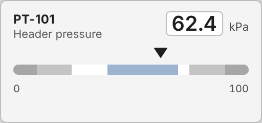

<figure class="card" id="EFC_AnalogIndicator_A_RangeBar"><div class="view" style="width:240px;height:112px"><div class="stage" style="width:256px;height:120px;transform:scale(0.9375)"><div class="hit" style="position:absolute;inset:0;pointer-events:none" title="click: open dynamic window"></div></div></div><figcaption><code>EFC/AnalogIndicator/A_RangeBar</code><br><b class="ok">T_KPI</b> &middot; dynamic window <code>dw_ProcessValue</code><br>click symbol: open dynamic window<br><i>render with planned fix 7 (alignItems: stretch); as committed the zone bars collapse</i></figcaption></figure>